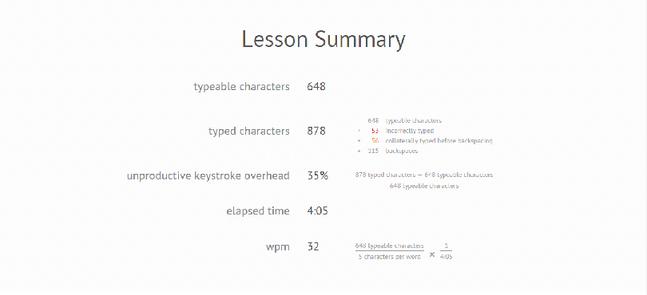

Hi! I'm Phap, a ATL-based web developer.
I was born in Vietnam and immigrated to the United States when I was 3 years old. I am grateful for the opportunities and life that has been provided by this great country. I grew up in Georgia most of my life and graduated from Morrow High School in Morrow, Ga. I attended Georgia Tech for a couple of years and studied electrical engineering there, but left because electrical engineering didn't interest me. I worked as a freelancer for about a year after I left college by teaching myself to code on codecademy and Udacity, but found very little opportunities so I eventually took a couple of sales positions until I worked as a sales manager for a small used car dealership called Freedom Used Auto Sales. All the while I was teaching myself to code through continued lessons on Udacity and by reading books like Code Complete. I eventually did two nanodegrees on Udacity for Full stack web development and front-end web development. However, the opportunities have been hard to come by and am now interested in trying to expand my skills at General Assembly.
